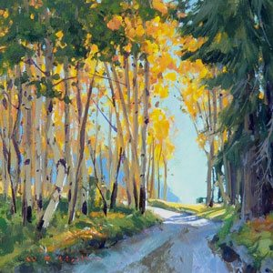
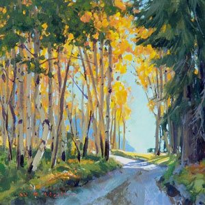
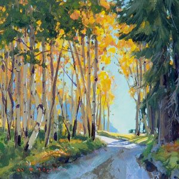

Art Articles: Tips for for Drawing, Watercolor, Acrylic And Oil Painting
Just getting started in drawing, watercolor, acrylic or oil painting? Or, looking to advance your skills as an artist and fully unleash your potential? The Editors from ArtistsNetwork.com are here to help you get started on the right path, or guide you to a new level of expertise with your artwork with the following articles.

Learn How to Draw People with Tips & Advice from the Pros
Learn How to Draw People: 7 Tips from Professional Artists
It’s no secret that learning how to draw people is an essential, timeless lesson in an artist’s development; figurative drawings continue to be among the most popular subjects in art schools and among professionals. But it takes more than just knowing how to create the contour lines that form a two-dimensional drawing of a person; one must have an understanding of anatomy, including muscle and bone structure, and of movement and balance to render the three-dimensional human body.
There are also the various body parts that have unique qualities to consider; the texture of the belly may be soft as a flower petal, while elbows and knees speak a different story. And the hands, poetically expressive and complex--they’re often thought of as the hardest part of the anatomy to depict accurately, and they can make or break a drawing.
Keep in mind the bone and muscle structure beneath the surface. In some places the surface is influenced by the angular bones, in others by the soft muscles. Don’t round off all the forms or the subject will look rubbery.~from Walt Reed (author of The Figure)
Drawing Hands
Drawing People and More
Drawing People
Opposites Attract
How to Draw a Person
Crop the photo thoughtfully before you start painting
Low-res photos are better than high-res ones
1. Drawing Hands
Keep in mind the bone and muscle structure beneath the surface. In some places the surface is influenced by the angular bones, in others by the soft muscles. Don’t round off all the forms or the subject will look rubbery.~from Walt Reed (author of The Figure)
2. Drawing People and More
A classic way to draw something with correct proportion is to create a grid and place it over your reference photo, then draw a grid on your paper. Erasing these lines can be a pain, so a lightbox (or window on a sunny day) can be used instead. Place the grid on the lightbox, tape it down, then place your paper over the grid. You can see the grid through the paper and there’s no erasing later.~from Carrie Stuart Parks and Rick Parks (authors of The Big Book of Realistic Drawing Secrets)
3. Drawing People
A classic way to draw something with correct proportion is to create a grid and place it over your reference photo, then draw a grid on your paper. Erasing these lines can be a pain, so a lightbox (or window on a sunny day) can be used instead. Place the grid on the lightbox, tape it down, then place your paper over the grid. You can see the grid through the paper and there’s no erasing later.~from Carrie Stuart Parks and Rick Parks (authors of The Big Book of Realistic Drawing Secrets)
4. Opposites Attract
An essential principle of design that also relates to the human figure is the concept of opposites. The use of opposites, or contrast, exists in all the arts to create interest. In the human figure, a contrapposto position, where the weight is on one leg, is usually more interesting than one where the weight is equally balanced on both legs or throughout the figure. Each opposite helps strengthen and clarify the other.~from Robert Barrett (author ofLife Drawing, now available as an ebook)
5. How to Draw a Person
The muscles are the body’s substructure. They are a big part of what gives the figure its shape and form. Understanding what goes on beneath the surface will help you see important details that might have gone otherwise unnoticed.~from Jeff Mellem (author ofSketching People)
6. Crop the photo thoughtfully before you start painting
Painting from photo references can make you forget that thoughtful cropping of the scene you want to paint or draw is necessary. This will help you reduce a lot of work composing on the canvas. If you take the picture with this in mind, you significantly cut down your workload.
7. Low-res photos are better than high-res ones
You don’t have to paint from photos that are large, with high resolution. Instead, use small photos of low resolution. It will help you to not rush into the details. And small, indistinct reference photos force you to simplify and reduce what you depict.
 
